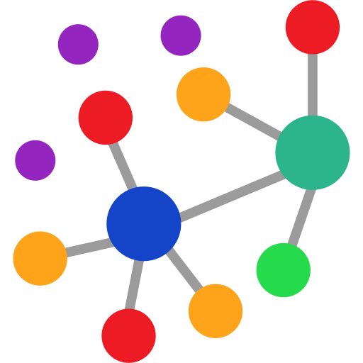
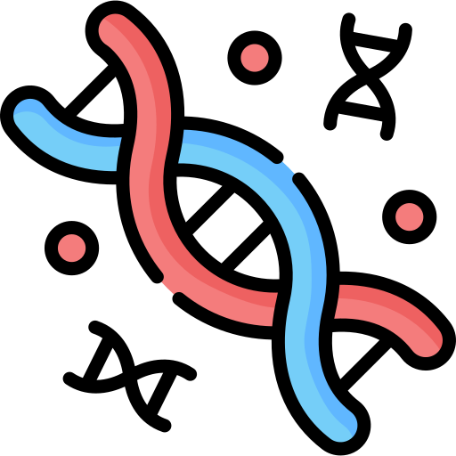
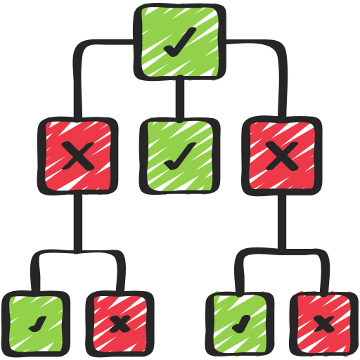
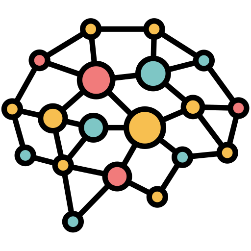

A*
Поиск пути кратчайшего пути с помощью алгоритма A-Star
Кластеризация
Группировка кластеров по признакам
Генетический алгоритм
Решение задачи коммивояжера "Эволюционным подходом"
Муравьиный алгоритм
Оптимизация путей на основе поведения муравьёв
Дерево решений
Модель принятия решений
Нейронная сеть
Нейронная сеть своими руками